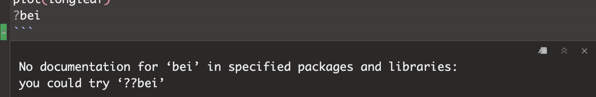
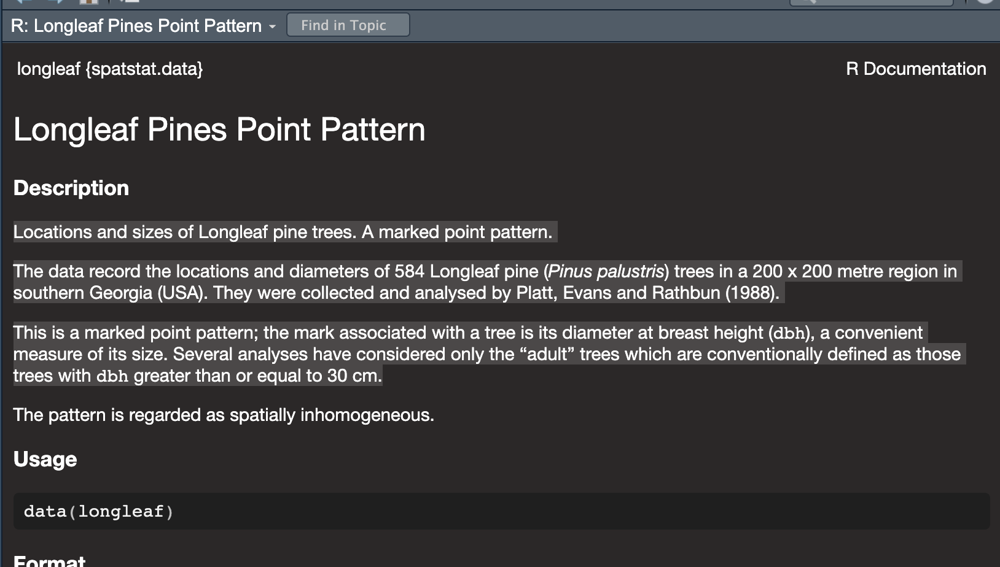
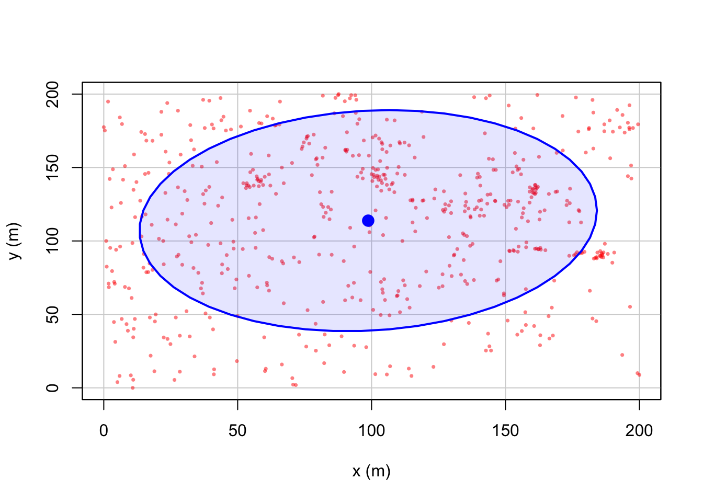
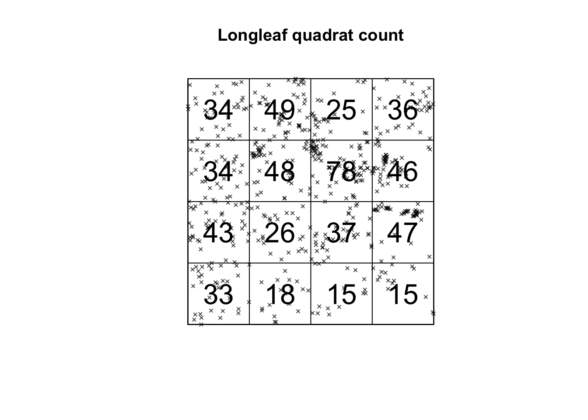
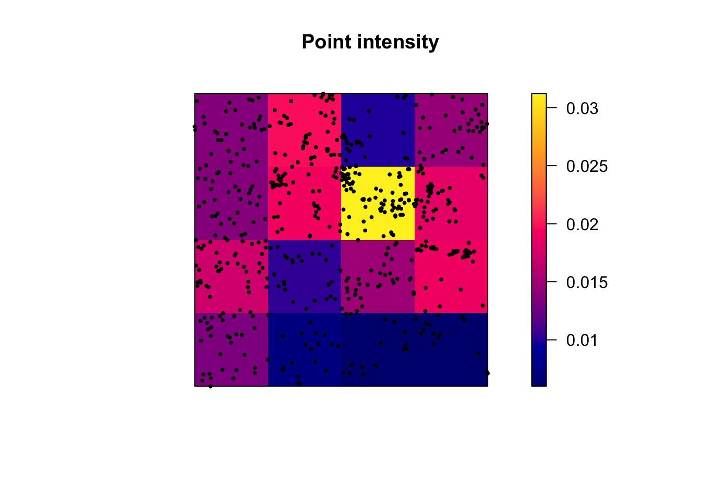
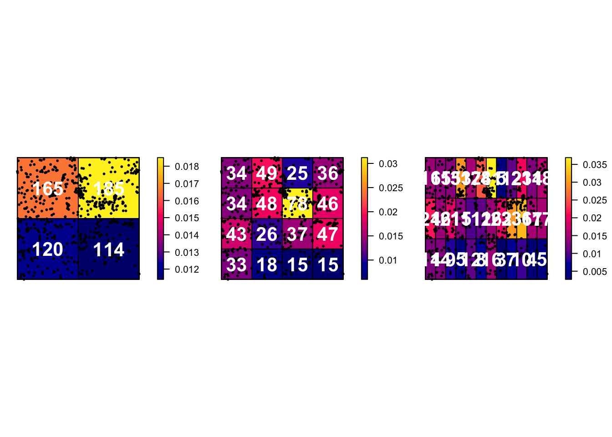
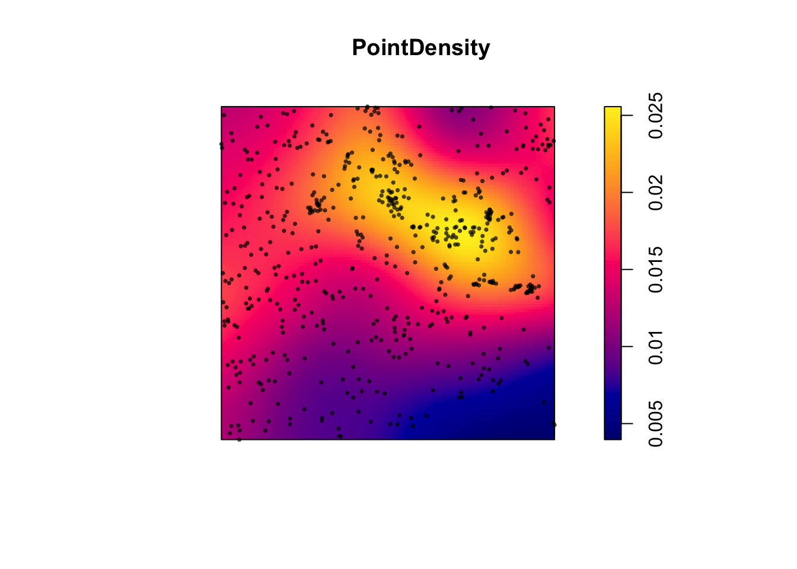
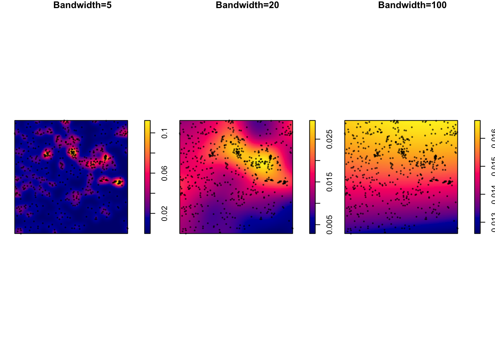
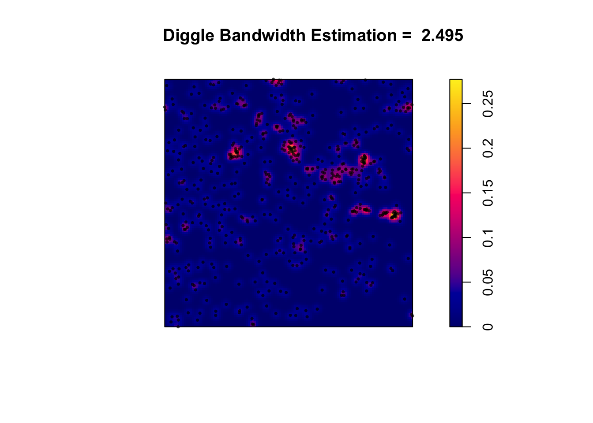

Lab 3A: Point Pattern Density
This is the first part of Lab 3
This is the first part of Lab 3
Welcome to Lab 3 on Point Pattern Analysis. A point pattern dataset is comprised of events or objects occurring in a defined study region. These events could represent anything with a specific measurable point location.
Objective: The goal of Lab 3 is to learn some introductory spatial statistical approaches for characterizing the spatial properties of a point pattern.
This week: We will be focusing on Point pattern density: quadrat analysis, kernel analysis and standard ellipses. (Oct 2-6)
RECOMMENDED: You can optionally submit this week’s lab to get graded up to the first 50 points - If you submit before Monday 9th, we will provide feedback, so you can improve your grade when you (re)submit the entire lab.
Next week (Oct 9-12): a new set of tutorials will be released on point pattern distance. You will (re)-submit everything from 3A and 3B.
See the rubric on canvas (this is up!) for how it will be graded and the checklist at the end for what you need for 100%.
See The Canvas page here, or go to canvas for assignment guidelines. You can use either the website base RStudio/Posit Cloud OR R-Desktop for this lab.
Getting stuck? Look at the Canvas page for the McGrew Chapter 14 - it has a great overview.
Getting started
1. Create your project
In Desktop R, select your 364 directory, create a new project, then name the project Lab 3. If you are stuck on this process, see the start of Lab 1 and Lab 2 or these tutorials
For R-Desktop, see Tutorial 3B
For Posit Cloud, see Tutorial 3C
You can check this has worked by looking on the file explorer on your computer, then selecting your GEOG364 folder and checking that a Lab 3 folder has appeared with your Lab3.Proj file inside it.
2. Install new packages
There are two specialist packages called “spatstat” and “car” which focus on point pattern analysis. Please install these - either keep reading for a summary or see this tutorial for details (or what the little yellow bar is).
If you are a Windows user, you might see a message at the beginning of the install process saying that you need to install R-Tools. IGNORE THIS - You probably don’t need to install R-Tools
Reminders on installing packages
Although it works in the console, please do not include the
install.packages() command in your .Rmd file .If you
include install.packages in your code chunks, then when you press knit,
you are asking a computer to independently visit an app store (which it
can’t do) - which often causes errors.
Instead, install spatstat and car by clicking the “install button” in the packages menu. Click on the install button, then start typing spatstat, select it and press install.
Click the button and type the name if the package you want to install
Now, repeat the process for the car package. This might
take a while to download. If this doesn’t work, TALK TO AN INSTRUCTOR
(it can be buggy).
3. Create your .RmD file
In Lab 1, you created your own template for your labs. In Lab 2, you used an .RmD template that Dr G created. In this lab, you can choose what you want to do. Either
Follow the instructions in Tutorial 3E. Remember to remove any “friendly text” below your YAML code!
Or follow the instructions in Lab 2, but change the text in the template to match Lab 3.
Your file should look professional with a template when you press
knit. Note, if you are using R Studio CLOUD, you might need to
re-install the rmdformats or prettydocs
package to make the templates appear. Want to try a new template? Try
these packages:
prettydocs(easy) or https://github.com/hrbrmstr/markdowntemplates (I have never tried this but they seem interesting)
KNIT TO CHECK IT WORKS. IF YOU ARE STRUGGLING WITH THIS, PLEASE TALK TO AN INSTRUCTOR.
4. Add your library code chunk
Add a new code chunk. Inside add the following code and run it.
The reason we are adding this just after typing it into your console is that these library commands need to be run every time you open R. So we put them in a code chunk right at the top of your file.
Note if later on you install new packages, please add them to this list and re-run not randomly throughout your code! I guarantee that ‘future you’ will thank you.
Now click the Knit Button and make sure everything looks correct.
Point Pattern Analysis
1. Loading the data
In this walk-through, we will use two data-sets that are already built into the spatstat package. The advantage of this is that we don’t have to worry about file formats or map projections.
- All of the examples in this tutorial are based on a dataset called
longleaf - You will be conducting your analysis on a dataset called
bei
But first, we need to load them into R studio. Make a new code chunk. Inside add:
Run the code chunk and you should see the longleaf and bei data-sets appear in your environment quadrant on the screen. They might appear as grey-ed out “promises”, but as soon as you do something else, they will load fully.
2. IMPORTANT
From now onward, you don’t have to run longleaf examples because you can see the output in this lab script, but I suggest copying them into your lab script, getting them working, then in the challenges, tweaking and editing them to replace the longleaf names with bei as required.
You are graded on the lab challenges.
3. Data background (help-files)
Every R command AND R-dataset has its own help file. For a more detailed explanation of how I combine these with google searches, see this tutorial. In general, you have two options to see a help file.
- Go to the Help quadrant (next to packages) and use the top right
search bar.
- IN THE CONSOLE (NOT IN A CODE CHUNK), type
?then the name of your command, function or dataset. e.g. to see the help file for the quick thematic map, I would type?qtmIN THE CONSOLE.
If you get an error/It doesn’t work, click here to expand!
Just like you can’t see the instagram help files without first installing instagram, then tapping the instagram icon,for this to work you must have BOTH installed (from the ‘app’ store) AND loaded) the library containing the command or dataset.
For example, If you see this error, you either haven’t loaded the spatstat library or run the library code chunk (e.g. see getting started)

To see the help file for the longleaf data, I would type this in
the console.
It brings up this page. Scrolling down will give more details and worked examples that I can run.

We can see a lot of information from this file, often in the notes section.
Click here to expand & see what I found out about longleaf
- My data is a point pattern dataset containing locations and diameter
measurements of longleaf pint trees in a US forest in Georgia
- There are 586 pine trees in the dataset
- The data was collected and analysed by Platt, Evans and Rathbun in
1988
- The data is marked. So it is not just locations, but it
also contains additional information about the diameter of each tree
trunk (in cm).
- The data is stored as a “ppp” object (which is a point pattern file
type)
- The ppp object also contains information on the region (i.e.,
window) that was chosen for the study. In this case it is a rectangle
with an X coordinate range of 0-200 and a Y coordinate range of 0-200,
with units in meters.
4. Summary analysis/Plots
Our data has been loaded in a special “spatstat” spatial format called ppp. This means we get different information when using commands like “plot”, “head” (which normally prints the first few lines) or “summary”.
It’s actually quite old fashioned in that it’s a harder to read format - so I bet there will be a new package along soon to replace it..
## Marked planar point pattern: 584 points
## Average intensity 0.0146 points per square metre
##
## Coordinates are given to 1 decimal place
## i.e. rounded to the nearest multiple of 0.1 metres
##
## marks are numeric, of type 'double'
## Summary:
## Min. 1st Qu. Median Mean 3rd Qu. Max.
## 2.00 9.10 26.15 26.84 42.12 75.90
##
## Window: rectangle = [0, 200] x [0, 200] metres
## Window area = 40000 square metres
## Unit of length: 1 metre## Marked planar point pattern: 6 points
## marks are numeric, of storage type 'double'
## window: rectangle = [0, 200] x [0, 200] metresI then made a quick plot of the longleaf data. Because the data is marked, the size of the circle automatically corresponds to the marks, the diameter of the tree trunk (which I worked out from the help file).
It automatically understands the data is spatial and that the trunk diameter is a mark
Challenge A
Google the “spatstat” R package. Tell me a little about it and what it does.
Make sure you have run code chunk that loads the packages (the one with the
librarycommand), AND one that loads the longleaf and bei data using thedatacommend. If not, go back and reread the section.In a new code chunk, use the instructions above to load the help file for the
beidata. In your own words, neatly summarise everything you can find about thebeidataset from the help file.Create a new code chunk and make a plot of the
beidata. Comment underneath the plot about whether you see any spatial autocorrelation (positive/negative/zero), plus which spatial fallacies might cause problems in this lab.Look at the summary of the
beidata. Can you catch where someone made a mistake in the help file? (try not to cheat on this one - it’ll help you learn R)
5. Mean Centre and Standard Ellipse
Now, let’s look at some summary point statistics. The easiest thing to consider is the spatial mean, where we take the mean of all the x values vs all the y values.
## [1] 98.73527## [1] 113.8293We can also add a standard ellipse using the dataEllipse command in
the car package. Here is a basic version and a fancy
version
#Fancy look at the par help file for more options
dataEllipse(longleaf$x, longleaf$y, levels=0.68,
fill=TRUE, fill.alpha=0.1,
col= c( rgb(red=1, green=0, blue=0, alpha = 0.5),
"blue"),
pch=16, cex=.5,
xlab="x (m)",ylab="y (m)") 
Want to know what the options mean? Click to expand
Here’s what it all means. The # in a code chunk means ignore the text
# look at the par and dataEllipse help files for more options
#
dataEllipse(longleaf$x, longleaf$y, levels=0.68,
fill=TRUE, # Fill the ellipse
fill.alpha=0.1, # Fill the ellipse with transparent color
# In the first part of col, I make my dots a slightly transparent red,
# in the second I make the ellipse blue
col= c ( rgb(red=1, green=0, blue=0, alpha = 0.5),"blue"),
pch=16, cex=.5, # filled dots (pch) and small size (cex)
xlab="x (m)",ylab="y (m)") #labelsChallenge B
Make a new heading called Standard Ellipse
Make a new code chunk and find the spatial mean of the
beidataCreate a new code chunk and plot the standard ellipse of the
beidata - that is formatted uniquely to you. Instead of including only the first standard deviation of the data, I want you to include TWO standard deviations. (Think about levels and your lecture notes, or google normal distribution 68% for a hint).
6. Density autocorrelation analysis
In the rest of this Lab, we will study the variation of the observations’ density across a study area, which tell us about the underlying non-uniformity of the background environment and how it might influence the pattern we see.
6A. Global intensity
The first way to look at this is to examine the overall density of points over the entire field, known as the global intensity. This is simply the average number of points per unit area.
We say it’s “global” because we only calculate a single number for the entire study area.
Mathematically, the overall intensity of a point process can be calculated via the following equation, where n is the number of points within our region and A is the overall area of the region.
\[\lambda=\frac{n}{A}\]
In R, we can do this simply by looking at the summary command. Scroll back up and look at it. We can see that the global intensity of the pattern is 0.0146 trees per square meter (note the units).
(We can also see that the thinnest tree trunk has a diameter 2cm and the largest, 75.9cm. Finally it tells us the shape and area of our boundary box containing all our points is 200x200m. Note, this bounding box doesn’t have to be rectangular.)
6B. Local Quadrat analysis
Moving beyond of a single ‘global’ number, we can examine how the ‘local’ density varies across the study area. The simplest way to do this is by a technique called quadrat analysis. See this week’s lectures and canvas.
This can be done in R using the quadratcount command from the spatstat package. Here, I “saved” my answer as the variable Q, so I can use it again below.
## x
## y [0,50) [50,100) [100,150) [150,200]
## [150,200] 34 49 25 36
## [100,150) 34 48 78 46
## [50,100) 43 26 37 47
## [0,50) 33 18 15 15This command divides the longleaf dataset in 16 equally sized square grid-cells, or quadrats - 4 quadrats in the x direction and 4 in the y direction. It then returns the number of points in each box as well as the size of each box. We can see that the area is 50*50 = 2500m.
To standardize and compare patterns, we can divide each count by 2500. The intensity command does this automatically, showing the proportion of points per unit area in each quadrat:
# Print the density for each quadrat
# This is literally the counts in each box divided by the area of the whole area, 2500m^2
intensity(Q)## x
## y [0,50) [50,100) [100,150) [150,200]
## [150,200] 0.0136 0.0196 0.0100 0.0144
## [100,150) 0.0136 0.0192 0.0312 0.0184
## [50,100) 0.0172 0.0104 0.0148 0.0188
## [0,50) 0.0132 0.0072 0.0060 0.0060We can also plot this to make it easier to interpret. I can quickly see that there are 15 points in the bottom right quadrat compared to 34 in the top left.
# I didn't want it to plot the different circle sizes so i turned off marks
plot(longleaf,
use.marks = F,
cex = 0.5, pch = 4, # point size and shape
main="Longleaf quadrat count") # plot title
plot(Q, add = TRUE, cex = 2) # Now I add Q on top.
Alternatively, we can plot the intensity, because the colours make it simpler to see patterns. This time, I added the points on top.
# Plot the intensity
plot(intensity(Q, image=TRUE), main="Point intensity", las=1) # Plot intensity raster
plot(longleaf, pch=20, cex=0.6, add=TRUE) # Add points
6C. Quadrat Variance Mean Ratio
Finally, I am going to calculate the Variance Mean Ratio, which gives an assessment about whether the data is clustered, uniform or random (AKA levels of spatial autocorrelation). Overall, I suspect this data is clustered. See the lecture for more.
# we use the as vector command to convert the data from a spatial ppp object back to a normal number
longleaf.variance <- var(as.vector(Q))
longleaf.mean <- mean(as.vector(Q))
longleaf.VMR <- longleaf.variance / longleaf.mean
print(longleaf.VMR)## [1] 6.9187216D. Quadrat Hypothesis test
We can now examine whether our pattern might look similar to those generated by different underlying scenarios. The easiest one to start with is “does the pattern look ‘unusual’ compared to one generated by an Independent Random Process.
By different I mean unusually clustered or uniform/regular.
H0: Our Longleaf pattern was caused by an Independent Random Process. Any clustering/dispersion is just random chance. AKA there’s an equal probability of seeing a point occur anywhere in the study area AKA The pattern is an example of Complete Spatial Randomness.
H1: Our longleaf is unusually DIFFERENT to one caused by an Independent Random Process.
Click to expand to read what the test is doing & how to run/interpret the output
Creating Independent Random Point Processes:
To assess the significance of a spatial pattern, we start by creating multiple simulated data-sets that represent what we would expect under our H0 scenario, in this case, complete spatial randomness. We generate these simulated data-sets using a Poisson distribution. The Poisson distribution is a mathematical model that describes the distribution of rare events occurring in a fixed interval of time or space. In our case, it’s used to simulate random point patterns.
Variance-to-Mean Ratio (VMR):
Next, for each of these simulated data-sets, we calculate the VMR. ON AVERAGE, it would be 1.Some will be slightly clustered and some more uniform just by chance - so imagine a histogram of VMR values from our simulation.
So, lets update our hypotheses:
H0: Our Longleaf pattern was caused by an Independent Random Process. Any clustering/dispersion is just luck. The VMR = 1
H1: Our longleaf is unusually DIFFERENT to one caused by an Independent Random Process. The VMR is likely to be unusually high OR unusually low.
Chi-Squared Test:
We want to know if the VMR from our actual longleaf data is “unusual” compared to the set from our simulated data-sets. So we we compare the VMR we observed in our actual data to this distribution of VMR from the simulations using a statistical test called the chi-squared test.
P-Value:
The chi-squared test provides a p-value, which represents the likelihood of encountering a VMR as extreme as what we observed in our simulated processes. For instance, a p-value of 0.051 means that 5.1% of artificially generated Poisson processes would exhibit a more extreme level of clustering or uniformity.
Interpreting the p-value:
The smaller the p-value, the more unusual our result, and the stronger the evidence that we can “reject H0.” In other words, we have reason to believe that something beyond random chance is responsible for our observed pattern.
Whether this is considered “significant” depends on your risk tolerance and the consequences of your decision. For instance, if a catastrophic outcome hinged on our decision, we might need a higher level of confidence than 5%.. (the old threshold of 0.05 = “significant” came from the days of pre-calculators where all this maths was done by hand).
Worked example in R.
Of course you don’t need to write all that all the time. This is enough.
H0: Our Longleaf pattern was caused by an Independent Random Process. Any clustering/dispersion is random chance. On average, the VMR = 1
H1: Our longleaf is unusually DIFFERENT to one caused by an Independent Random Process. The VMR is likely to be unusually high OR unusually low.
##
## Chi-squared test of CSR using quadrat counts
##
## data: longleaf
## X2 = 152.64, df = 24, p-value < 2.2e-16
## alternative hypothesis: two.sided
##
## Quadrats: 5 by 5 grid of tilesHere our p-value is TINY! 2.2 x 10-16, so this data is VERY unusual if it was caused by an IRP.
Let’s use xkcd to put that into context (link here). This is how likely it is.. “You pick up a phone, dial a random 10-digit number, and say ’Hello President Obama, there’s just been a magnitude 8 earthquake in California” and you are correct!”
We have enough evidence to reject H0 and say that our scenario of an “independent random process” is unlikely to have caused this pattern.
Challenge C
If none of that made sense, also try working through this online example: https://mgimond.github.io/Spatial/point-pattern-analysis-in-r.html
Create a new subheading called quadrat analysis
In your own words, explain what 1st and 2nd spatial autocorrelation are. What 1st and second order processes do you think might influence your bei dataset?
Create a new code chunk and calculate out the global intensity of trees in the bei dataset
Conduct a quadrat analysis on the bei dataset, including
A table of counts
A table of intensities
A plot of counts
A plot of intensities
Calculate the Variance Mean Ratio for the bei data. Explain from this if you think the data is clustered, randomly distributed or uniformly distributed.
Conduct a chi-square hypothesis test to assess if your data really is randomly distributed
6E. Issues with quadrat analysis
Like many things in statistics, we don’t want individual items to skew our results. So I suggest if possible to keep the numbers IN EACH QUADRAT to be at least 30. Otherwise you have an even higher likelihood of seeing patterns just by random chance.
Quadrat analysis is susceptible to some major spatial fallacies and problems. As described in this textbook section:
The choice of quadrat shape and size will influence the measure of local density and must be chosen with care. If very small quadrat sizes are used you risk having many quadrats with no points which may prove uninformative. If very large quadrat sizes are used, you risk missing subtle changes in spatial density distributions.”
Here is how I made some plots that explores this issue.
# First, I will set up my different experiments
Q.2_2.Boxes <- quadratcount(longleaf, nx = 2, ny = 2)
Q.4_4.Boxes <- quadratcount(longleaf, nx = 4, ny = 4)
Q.12_3.Boxes <- quadratcount(longleaf, nx = 12, ny = 3)
# Now set up three subplots in a row - and change the plot margin
# Type ?par in the console for more options
par(mfrow=c(row=1,col=3),mar=c(1,1,1,3))
# Plot 1
# Plot intensity, then add longleaf points, then add numbers
plot(intensity(Q.2_2.Boxes, image=TRUE), main="", las=1)
plot(longleaf, pch=20, cex=0.6, col=rgb(0,0,0,.5), add=TRUE)
plot(Q.2_2.Boxes, add = TRUE, cex = 2,col="white",font=2)
# Plot 2
# Repeat but for the 4x4 boxes.
plot(intensity(Q.4_4.Boxes, image=TRUE), main="", las=1)
plot(longleaf, pch=20, cex=0.6, col=rgb(0,0,0,.5), add=TRUE)
plot(Q.4_4.Boxes, add = TRUE, cex = 2,col="white",font=2)
# Plot 3
# Repeat but for the 12x3 boxes.
plot(intensity(Q.12_3.Boxes, image=TRUE), main="", las=1)
plot(longleaf, pch=20, cex=0.6, col=rgb(0,0,0,.5), add=TRUE)
plot(Q.12_3.Boxes, add = TRUE, cex = 2,col="white",font=2) 
Challenge D
Create a new code chunk, then copy and paste the code above into it. Replace all the longleafs with bei (there are 6 instances) and run to check it works
Now, modify the code chunk to:
- Make your subplots in 1 column but in 3 rows (e.g. arranged vertically)
- plot quadrat counts for
- 4 quadrats (2 in the x direction and 2 in the y direction),
- 20 quadrats (5 in the x direction and 4 in the y direction),
- 100 quadrats (10x10)
Below the code chunk, write about the features you observe when modifying the number of quadrats for the bei data.
This is a classic example of a spatial fallacy. Explain which one and what is going on.
7. Kernel Density Estimation (KDE)
7A. What is this?
Kernel Density Estimation is another method that we can use to explore point pattern densities. As described in https://sites.warnercnr.colostate.edu/wtinkham/courses-taught/nr-512-spatial-statistical-modeling/nr-512-exercise-descriptions/nr-512-exercise-3/.
“Quadrat counting is useful for characterizing the intensity of an in-homogeneous point process, however there are limitations including:
– The choice of origin, quadrat orientation, and quadrat size affects the observed frequency distribution. – A significant amount of spatial data is lost.
KDE algorithms use a moving window approach to characterize intensity. This approach tends to preserve a greater amount of spatial detail and does not suffer as much from choices of origin, quadrat orientation, and quadrat size as compared to quadrat counting.”
“Conceptually, a smoothly curved surface is fitted over each point. The surface value is highest at the location of the point and diminishes with increasing distance from the point.”
Tell me in simple language. Click here to expand
This is how ChatGPT explains it:
Kernel density smoothing is a statistical technique used to estimate the density or concentration of something in a specific area, like the density of longleaf trees in a forest. Let’s break it down using an example with the longleaf tree data from the R spatstat package:
The Data: Imagine you’re a student studying longleaf trees in a forest. You’ve collected data on the locations of some longleaf trees in the forest.
The Question: You want to know if there are areas in the forest where longleaf trees are more concentrated than in others. In other words, you want to create a map that shows where longleaf trees are more common.
Kernel Density Smoothing: This technique helps you create that map. It works by placing a little “hill” or “bump” on the map for each known longleaf tree location.
Bandwidth: The size of each “hill” (or the width of the bump) is determined by something called the bandwidth. A smaller bandwidth makes the map more detailed and wiggly, while a larger bandwidth makes it smoother.
Combining Information: By adding up all these little “hills” from each known longleaf tree, you get a smooth map. The map shows where the concentration of longleaf trees is higher or lower in the forest. Areas with taller “hills” on the map have more longleaf trees, while areas with shorter “hills” have fewer.
So, in simple terms, kernel density smoothing takes your data on longleaf tree locations and turns it into a map that gives you a sense of where these trees are more densely packed in the forest. It helps you identify the hot-spots of longleaf tree concentration, which can be valuable information for ecological studies or conservation efforts.
I want all the details! Click here to expand
See here :) https://pro.arcgis.com/en/pro-app/latest/tool-reference/spatial-analyst/how-kernel-density-works.htm
Or this set of videos is great: https://www.youtube.com/watch?v=ge4Oh-h1Of8
To apply it in R, we simply use the density command. For example, for the longleaf data, I would create a new code chunk and type.
PointDensity <- density(longleaf)
plot(PointDensity)
# Individual events can be added to the plot by adding our original points to the plot.
plot(longleaf, add = TRUE,
use.marks = F, cex = 0.5,pch=16) 
So you can see that instead of quadrats, we now have a smooth surface.
7B. Modifying the bandwidth
In the density command above, the “bandwidth” (e.g. the size & shape) of the smoothing window/hill/‘bump’ defaults to 0.9 times the minimum of the standard deviation and the interquartile range divided by 1.34 times the sample size to the negative one-fifth power.
However, the bandwidth can be scaled via the sigma parameter within the density command:
# set up 3 subplots in a row
par(mfrow=c(row=1,col=3),mar=c(1,1,1,1))
# change bandwidth by altering the value assigned to sigma
plot (density(longleaf, sigma = 5),main="Bandwidth=5")
plot(longleaf, add = TRUE,use.marks = F, cex = 0.5,pch=16)
plot (density(longleaf, sigma = 20),main="Bandwidth=20")
plot(longleaf, add = TRUE,use.marks = F, cex = 0.5,pch=16)
plot (density(longleaf, sigma = 100),main="Bandwidth=100")
plot(longleaf, add = TRUE,use.marks = F, cex = 0.5,pch=16)
7C. Calculating an “optimal” bandwidth
Different statisticians have come up with different ways to automatically calculate the “optimal” bandwidth. For example
bw.diggle()- minimizes the mean-square error criterion defined by Diggle (1985)bw.frac()- uses a quantile of the distance between two independent random points in the window 3. 3. 3.bw.stoyan()- sets the standard deviation of the kernel
You can look at the R help to understand in more detail how they work (e.g. type ?bw.diggle into your console)
Here I will apply the diggle() function to estimate a bandwidth for the data. As you can see, the result is interesting.
# Report the value of the bandwidth
optimal_diggle <- bw.diggle(longleaf)
# use the diggle function to automatically guess bandwidth
# I made a fancy title that automatically prints it.
plot (density(longleaf,sigma = optimal_diggle),
main=paste("Diggle Bandwidth Estimation = ",round(optimal_diggle,3)))
plot(longleaf, add = TRUE,use.marks = F, cex = 0.5,pch=16)
Challenge E
Apply the code above to your script to calculate and plot an “optimal” bandwidth for the bei data.
Finally, reflect on the lab and look back at the outputs you have made. If someone asks you about the spatial distribution of trees in the area, what would you tell them and which plots and analyses would you use (or not use!) to provide evidence. Write your thoughts below the code chunk.
NOW GO TO LAB 3B
Remember it’s a 2 week lab!
Submitting your work
Remember to save your work throughout and to spell check! (next to the save button). Now, press the knit button one final time.
On R-Desktop
If you have not made any mistakes in the code then R should create a html file in your lab 3 folder which includes your answers.
If you look at your lab 3 folder on your computer, you should see the html there - complete with a very recent time-stamp. Double click on the html file. This will open it in your web-browser.
CHECK THAT THIS IS WHAT YOU WANT TO SUBMIT.
On Rstudio cloud,
- See TUTORIAL
3 Cloud - LINK FIXED for how to download your files
Finally, go to Canvas and submit BOTH your html and your .Rmd file in Lab 3.

How am I graded?
Overall, here is what your lab should correspond to:
| POINTS | Approx grade | What it means |
|---|---|---|
| 98-100 | A* | Exceptional. Above and beyond. THIS IS HARD TO GET. |
| 93-98 | A | Everything asked for with high quality. Class example |
| 85-93 | B+/A- | Solid work but the odd mistake or missing answer in either the code or interpretation |
| 70-85 | B-/B | Starting to miss entire/questions sections, or multiple larger mistakes. Still a solid attempt. |
| 60-70 | C/C+ | It’s clear you tried and learned something. Just attending labs will get you this much as we can help you get to this stage |
| 40-60 | D | You submit a single word AND have reached out to Dr G or Aish for help before the deadline (make sure to comment you did this so we can check) |
| 30-40 | F | You submit a single word……. ANYTHING.. Think, that’s 30-40 marks towards your total…. |
| 0+ | F | Didn’t submit, or incredibly limited attempt. |